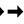

重要
翻訳は あなたが参加できる コミュニティの取り組みです。このページは現在 100.00% 翻訳されています。
26. GRASS GIS の統合
GRASS統合は、GRASS GISデータベースと機能へのアクセスを提供します（ 文献とWeb参照 中のGRASS-PROJECTを参照）。統合は、プロバイダとプラグインの二つの部分から構成されています。プロバイダでは、GRASSラスタおよびベクタレイヤを閲覧、管理、視覚化できます。プラグインを使用すると、新しいGRASS locationとmapsetを作成し、GRASS領域を変更し、ベクタレイヤを作成・編集し、400の以上のGRASSモジュールでGRASS 2-Dと3-Dデータを分析できます。このセクションではプロバイダやプラグイン機能を導入し、GRASSデータを管理したりそれで作業するいくつかの例をあげます。
プロバイダはGRASSバージョン6および7をサポートし、プラグインはGRASS 6および7をサポートしています（QGIS 2.12以降）。QGISの配布には、GRASS 6またはGRASS 7、若しくは同時に両方のバージョン（バイナリは異なるファイル名を持ちます）のプロバイダ/プラグインを含んでいる場合があります。ただし、プロバイダ/プラグインのバージョンは実行時に1つだけ読み込めます。
26.1. デモデータセット
例として、QGIS のアラスカデータセット（セクション サンプルデータのダウンロード を参照）を使用します。このデータセットには、3つのベクタレイヤと1つのラスタ標高マップを持った、小さなサンプルGRASS ロケーション が含まれています。grassdata という新しいフォルダを作成し、https://qgis.org/downloads/data/ から QGIS 'Alaska' データセット qgis_sample_data.zip をダウンロードし、そのファイルを grassdata に展開します。
より多くのサンプルGRASS ロケーション は、GRASSのウェブサイトhttps://grass.osgeo.org/download/data/ で利用できます。
26.2. GRASSラスタおよびベクタレイヤを読み込む
プロバイダが QGIS に読み込まれている場合、GRASS  アイコンの付いたロケーションアイテムが、GRASS ロケーションを含む各フォルダアイテムの下のブラウザツリーに追加されます。フォルダ
アイコンの付いたロケーションアイテムが、GRASS ロケーションを含む各フォルダアイテムの下のブラウザツリーに追加されます。フォルダ grassdata に移動し、ロケーション alaska と マップセット demo を展開します。
他のレイヤーと同様に、ブラウザからレイヤー項目をダブルクリックするか、マップキャンバスや凡例にドラッグ＆ドロップするかによって、任意のGRASSラスタレイヤとベクタレイヤを読み込めます。
Tip
GRASSデータの読み込み
GRASSロケーションアイテムが表示されない場合は、GRASSベクタプロバイダが読み込まれているかどうか、 を検証してください。
26.3. ドラッグ＆ドロップでGRASSロケーションへデータをインポートする
このセクションでは、GRASS mapsetにラスタとベクタデータをインポートする方法を例示します。
QGISのブラウザで、データをインポートしたいマップセットに移動します。
QGISのブラウザで、GRASSにインポートするレイヤを探します。ソースデータがツリー内のマップセットから離れすぎている場合は、ブラウザの別のインスタンス（ ブラウザパネル（2） ）を開くことができることを覚えておいてください。
レイヤをドラッグし、インポート先のマップセットにドロップします。大きなレイヤのインポートには時間がかかることがあり、インポートが完了するまで、新たなレイヤ項目の前にアニメーションアイコン  が表示されます。
ラスタデータが異なるCRSにある場合、それらは Approximate （高速）または Exact （正確な）変換を使用して再投影できます。元ラスタへのリンクが作成された場合（ r.external を使用して）、元データは同じCRSにあり、フォーマットがGDALにはよく知られている、元データのCRSが使用されます。 GRASSオプション の ブラウザ タブでこれらのオプションを設定できます。
元ラスタがより多くのバンドを持っている場合、 .<band number> 接尾辞を持つ新しいGRASS地図が各レイヤについて作成され、すべてのマップのグループ  アイコンが作成されます。外部ラスタは別のアイコン
アイコンが作成されます。外部ラスタは別のアイコン  を持ちます。
を持ちます。
26.4. QGISブラウザでGRASSデータを管理する
マップをコピーする：GRASSマップは、同じロケーション内のマップセット間でドラッグアンドドロップを使ってコピーできます。
マップを削除する：GRASSマップ上で右クリックしてコンテキストメニューから 削除 を選択します。
マップの名前を変更する：GRASSマップ上で右クリックしてコンテキストメニューから 名前を変更 を選択します。
26.5. GRASSオプション
GRASSオプションは GRASS オプション ダイアログ中で設定できます。このダイアログはブラウザでロケーションまたはマップセットの項目を右クリックした後、 GRASS オプション を選択すると開きます。
26.6. GRASSプラグインを起動する
QGISでGRASSの機能を使用するには、プラグインマネージャを使ってGRASSプラグインを選択し、読み込む必要があります。これをするには、  メニューに行き、
メニューに行き、  GRASS を選択し、 :guilabel:`OK`をクリックします。
GRASS を選択し、 :guilabel:`OK`をクリックします。
GRASSプラグインを起動すると、以下の主な機能がGRASSメニュー（ ）で提供されています：


26.7. GRASS mapsetを開く
プラグインでGRASSツールへのアクセスを取得するためにGRASS mapsetを開く必要があります（mapsetが何も開かれていない場合はツールが無効になっています）。mapsetはブラウザから開くことができます：mapset項目を右クリックして、 Mapsetを開く をコンテキストメニューから選択します。
26.8. GRASS[場所]と[地図セット]
GRASSのデータはGISDBASEと呼ばれるディレクトリに保存されます。このディレクトリは grassdata と呼ばれることが多く、QGISでGRASSプラグインを使用する前に作成する必要があります。このディレクトリの中で、GRASS GISデータは LOCATIONs と呼ばれるサブディレクトリに格納されているプロジェクトごとに整理されています。各 LOCATION は座標系、地図投影法、地理的境界によって定義されます。各 LOCATION は複数の MAPSETs (LOCATION のサブディレクトリ) を持つことができ、それらはプロジェクトを異なるトピックやサブ領域に細分化したり、個々のチームメンバーのワークスペースとして使用されます (ref:literature_and_web の Neteler & Mitasova 2008 を参照)。GRASSモジュールでベクタやラスタのレイヤを分析するには、一般的にGRASSの LOCATION にインポートする必要があります。(これは厳密には正しくありません。GRASSモジュールの r.external と v.external を使えば、インポートせずに外部のGDALサポートデータセットへの読み取り専用リンクを作成することができます。これは初心者がGRASSを使うときの一般的な方法ではないので、ここでは説明しません)。
図 26.1 アラスカLOCATIONのGRASSデータ
26.9. GRASS LOCATIONへデータをインポートする
データを簡単にブラウザにドラッグ＆ドロップしてインポートできる方法を見つけるために、 ドラッグ＆ドロップでGRASSロケーションへデータをインポートする セクションを参照してください。
このセクションでは、標準GRASSモジュールを使用して、伝統的な方法でQGIS「アラスカ」データセットによって提供される「アラスカ」GRASS LOCATION に、ラスタおよびベクタデータをインポートする方法の例を示します。したがって、QGIS「アラスカ」データセットから土地被覆ラスター地図 landcover.img とベクターGMLファイル lakes.gml を使用します（ サンプルデータのダウンロード を参照）。
QGISを起動し、GRASSプラグインがロードされていることを確認します。
GRASSデータベースとして、QGISアラスカデータセットの
grassdataフォルダを、ロケーションとして 'alaska'、マップセットとして 'demo' を選択し、 OK をクリックします。ここで
 GRASSツールを開く アイコンをクリックします。GRASSツールボックスダイアログが表示されます（セクション GRASSツールボックス を参照）。
GRASSツールを開く アイコンをクリックします。GRASSツールボックスダイアログが表示されます（セクション GRASSツールボックス を参照）。ラスター地図
landcover.imgをインポートするには、 モジュール タブのr.in.gdalモジュールをクリックして下さい。この GRASSモジュールは GDAL がサポートしているラスタファイルをGRASSLOCATIONにインポートします。r.in.gdalモジュールダイアログが表示されます。QGIS「アラスカ」データセット内の
rasterフォルダを参照して、ファイルlandcover.imgを選択します。出力ラスタマップ名として
landcover_grassを定義し、 実行 をクリックします。guilabel:Output`タブに、現在実行中のGRASSコマンド ``r.in.gdal -o input=/path/to/landcover.img output=landcover_grass` が表示されます。成功しました と表示されたら、 出力を見る をクリックします。これで
landcover_grassラスタレイヤがGRASSにインポートされ、QGISキャンバスに表示されます。ベクタGMLファイル
lakes.gmlをインポートするには モジュールツリー タブのモジュールv.in.ogrをクリックします。このGRASSモジュールを使用すると、GRASSLOCATIONにOGRサポートのベクターファイルをインポートできます。v.in.ogrのモジュールダイアログが表示されます。QGIS「アラスカ」データセット内の
gmlフォルダを参照し、OGRファイルとしてlakes.gmlファイルを選択します。ベクタ出力名として
lakes_grassを定義し、 実行 をクリックします。この例では他のオプションを気にする必要はありません。出力 タブには、現在実行中のGRASSコマンドv.in.ogr -o dsn=/path/to/lakes.gml output=lakes_grassが表示されます。成功しました と表示されたら、出力を見る をクリックします。
lakes_grassベクタレイヤがGRASSにインポートされ、QGISキャンバスに表示されます。
26.9.1. 新しいGRASS[場所]を作成する
例として、単位としてフィートを使い、アルバース等積投影で投影された、サンプルGRASS [場所]アラスカ です。このサンプルGRASS [場所]アラスカ は、以下のGRASS関連のセクションのすべての例と演習のために使用されます。コンピュータ上のデータセットをダウンロードしてインストールすると便利です（ サンプルデータのダウンロード を参照）。
QGISを起動し、GRASSプラグインがロードされていることを確認します。
QGISアラスカデータセット（ サンプルデータのダウンロード 参照）からの
alaska.shpシェープファイル（セクション ファイルからレイヤを読み込む 参照）を可視化します。GRASSツールバーで、
 地図セット アイコンをクリックして 新しい地図セット ウィザードを起動してください。
地図セット アイコンをクリックして 新しい地図セット ウィザードを起動してください。既存のGRASSデータベース(GISDBASE)フォルダ
grassdataを選択するか、コンピュータのファイルマネージャを使って新しいLOCATION用のフォルダを作成します。そして 次へ をクリックします。このウィザードを使用して、既存の
LOCATIONの中に新しいMAPSETを作成したり（新しい[地図セット]を追加する のセクションを参照）、完全に新しいLOCATIONを作成することができます。 新規ロケーションを作成 を選択します（参照 図 26.2）。
新規ロケーションを作成 を選択します（参照 図 26.2）。LOCATIONの名前 - ここでは'alaska'とした - を入力し、:guilabel:`次へ`をクリックします。投影リストを有効にするラジオボタン
投影法 をクリックして投影を定義します。私たちはアルバース等積アラスカ（フィート）投影を使用しています。それはEPSG ID 2964によって表されることを知っているので、検索ボックスに入力します。（注意：このプロセスを別の
場所と投影法で繰り返したいが、EPSG IDを記憶していない場合は、ステータスバーの右下隅にある CRS Status アイコンをクリックしてください（ 投影法の操作 セクションを参照））。
CRS Status アイコンをクリックしてください（ 投影法の操作 セクションを参照））。フィルタ に 2964 と入力して投影法を選択して下さい.
次へ をクリックします。
デフォルト区域を定義するために、東西南北の
LOCATIONの境界を入力しなければなりません。ここで、ボタン 現在のQGISの範囲を設定 をクリックすると、読み込まれたレイヤalaska.shpの範囲が GRASS のデフォルト領域として適用されます。次へ をクリックします。
新しい :file:‘LOCATION` 内に
MAPSETを定義する必要もあります（新しいLOCATIONを作成するときはこれが必要です）。それには好きに名前を付けられます - ここでは'demo'を使いました。GRASSはPERMANENTと呼ばれる特別なMAPSETを自動的に作成します。それはプロジェクトのコアデータ、そのデフォルトの空間的範囲および座標系の定義を格納するように設計されています（ 文献とWeb参照 中のNeteler＆Mitasova 2008を参照）。要約が正しいことを確認し、完了 をクリックします。
新しい
LOCATION「アラスカ」 と２つのMAPSET'demo'と'PERMANENT'が作られました. 現在開かれているワーキングセットはあなたが定義した 'demo' です。GRASSツールバーのそれまでは利用できなかったいくつかのツールが利用可能になっています.
図 26.2 QGIS内で新しいGRASS[場所]または新しい[地図セット]を作成する
手順が多いように感じたかもしれませんが、実際はそれほど悪くなく、LOCATION を素早く作成することができます。これで LOCATION 'alaska' はデータをインポートする準備が整いました（GRASS LOCATIONへデータをインポートする セクションを参照）。また、QGIS 'Alaska' データセット サンプルデータのダウンロード に含まれるサンプルのGRASS LOCATION 'alaska'に既に存在するベクタデータとラスタデータを使って、セクション GRASSベクタデータモデル に進むこともできます。
26.9.2. 新しい[地図セット]を追加する
ユーザーは、自分で作成したGRASS MAPSET への書き込みアクセス権を持ちます。これは、自分の MAPSET へのアクセス以外にも、他のユーザーの MAPSET 中の地図を（そして他のユーザーはあなたのものを）読むことができることを意味しますが、変更したり削除できるの自分の MAPSET 中の地図だけです。
すべての MAPSET には WIND ファイルが含まれ,そこには現在の領域の座標値と選択されているラスタの解像度が格納されています (Neteler & Mitasova 2008 文献とWeb参照, セクション GRASS領域ツール 参照).
QGISを起動し、GRASSプラグインがロードされていることを確認します。
GRASSツールバーで、
地図セット アイコンをクリックして 新しい地図セット ウィザードを起動してください。さらに「テスト」という
MAPSETを追加するため、LOCATION「アラスカ」の GRASS データベース (GISDBASE) フォルダgrassdataを選択して下さい.次へ をクリックします。
このウィザードを使用して、既存の
LOCATION内に新しいMAPSETを作成したり、全く新しいLOCATIONを作成することができます。ラジオボタン 場所を選択 をクリックし（ 図 26.2 を参照）、 次へ をクリックします。新しい
MAPSETにtestという名前を入力します。ウィザードの下の方に、既存のMAPSETとそれに対応する所有者のリストが表示されます。次へ をクリックし、要約が正しいことを確認し、完了 をクリックします。
26.10. GRASSベクタデータモデル
デジタイズに先立って GRASSベクタデータモデル を理解することが重要です。一般的には、GRASSは、トポロジ的ベクタモデルを使用しています。これは、領域が閉じたポリゴンとしてではなく、一つ以上の境界で表現されることを意味します。二つの隣接する領域間の境界は一度だけデジタイズされ、それは、両方の領域によって共有されています。境界は隙間なく接続され閉じている必要があります。領域は、領域の 重心 によって識別（およびラベル付け）されます。
境界と重心のほかに、ベクタマップにはポイントとラインも含めることができます。これらのすべてのジオメトリ要素は、一つのベクタで混合できる一つのGRASSベクタマップ内の異なるいわゆる「レイヤ」で表されます。だからGRASSにおいては、レイヤはベクタまたはラスタ地図ではなく、ベクタレイヤ内部の１つのレベルです。これは慎重に区別することが重要です。（ジオメトリ要素を混合することは可能ですが、それは異常なことであり、GRASSにおいてさえベクタネットワーク解析などの特別な場合に使用されるだけです。通常は、異なるジオメトリ要素は異なるレイヤに格納することをお勧めします。）
1つのベクタデータセット内には複数の「レイヤー」を格納できます。例えば、田畑、森林、湖沼は、一つのベクタに格納できます。隣接する森林と湖沼には同じ境界を共有できますが、それらは別々の属性テーブルを持っています。境界に属性を付けることも可能です。例として、湖沼と森林の境界が道路なので、異なる属性テーブルを持つ場合があります。
地物の「レイヤ」はGRASS内部で「レイヤ」によって示されます。「レイヤ」は（そのジオメトリが森か湖かなど）データセット内に複数のレイヤがあるかどうかを示す数値です。今のところ、それは数にだけできます。将来的には、GRASSは、ユーザーインターフェイス内のフィールドとして名前をサポートします。
属性はGRASS 場所 内部にdBase、SQLite3として、または外部データベーステーブル 、例えば、PostgreSQL、MySQL、Oracleなどに格納できます。
データベーステーブル中の属性は「カテゴリ」値を使用してジオメトリ要素とリンクされます。
「カテゴリ」（キーID）はジオメトリプリミティブに付随した整数であり、それはデータベーステーブル内の1つのキー列へのリンクとして使用されます。
Tip
GRASSベクタモデルについて調べる
GRASSベクタモデルとその機能を学ぶ最良の方法は、ベクタモデルがより深く説明されている多くのGRASSチュートリアルの一つをダウンロードすることです。より詳しい情報、書籍、チュートリアルは https://grass.osgeo.org/learn/manuals/ をご覧ください。
26.11. 新しいGRASSベクタレイヤを作成する
新しいGRASSベクタレイヤを作るには、ブラウザで地図セットコンテキストメニューから次の項目のいずれかを選択します：
点レイヤの新規作成
線レイヤの新規作成
ポリゴンレイヤの新規作成
そして、ダイアログに名前を入力します。新しいベクタマップが作成され、レイヤはキャンバスに追加され、編集が開始されます。レイヤの種類を選択することは、ベクタマップにデジタイズできるジオメトリタイプを制限するものではありません。GRASSでは、1つのベクタマップですべてのジオメトリタイプ（ポイント、ライン、ポリゴン）をまとめることができます。QGISはひとつのレイヤが特定のタイプを持っている必要があるので、種類はレイヤをキャンバスに追加するのに使われるだけです。
既存のベクタマップのコンテキストメニューから、上記項目のいずれかを選択し、既存のベクタマップにレイヤを追加することもできます。
GRASSはトポロジ的ベクタモデルを使用しているので、ひとつのレイヤでジオメトリタイプの全種類（ポイント、ラインおよびエリア）をまとめることができ、新しいGRASSベクタを作成するときにジオメトリタイプを選択する必要はありません。これがQGISでのシェープファイルの作成と異なっているのは、シェープファイルが単純地物ベクタモデルを使用しているためです（ 新しいベクタレイヤを作成する の項を参照）。
26.12. GRASSベクタレイヤをデジタイズして編集する
GRASSベクタレイヤは、標準のQGISデジタイズツールを使用してデジタイズできます。しかし以下のためにいくつかの特殊性があり、これらは知っておくべきでしょう：
GRASS トポロジモデル 対 QGIS単純地物
GRASS モデルの複雑さ
単独のマップに複数のレイヤ
単独のマップに複数のジオメトリタイプ
複数のレイヤからの複数の地物によってジオメトリを共有します
その特殊性はこの後のセクションで説明します。
保存する、変更を破棄する、元に戻す、やり直す
警告
編集中に行われたすべての変更は、すぐにベクタマップと関連属性テーブルに書き込まれます。
変更は、各操作の後に書き込まれますが、編集を終了するときに、元に戻す/やり直す、すべての変更を破棄することができます。元に戻すまたは変更を破棄する場合、元の状態がベクタマップと属性テーブルに再び書き込まれます。
この動作には主な理由が2つあります：
これは、ユーザーは自分がしていることがやりたいことであり、作業が突然中断されたとき（例えば停電）には、データが保存されている方が良い、という信念に由来するGRASSベクタの性質です。
トポロジ的なデータを効果的に編集するために必要なのは、トポロジ的に正しいかどうかの情報を視覚化することであり、そのような情報は、地図に変更が書き込まれた場合にのみ、GRASSのベクタ地図から得ることができます。
ツールバー
GRASSレイヤが編集されるときに「デジタイジングツールバー」にはいくつかの特定のツールがあります：
アイコン |
ツール |
Purpose |
|---|---|---|
点を追加 |
新しい点をデジタイズする |
|
|
線を追加 |
新しいラインをデジタイズする |
|
境界線を追加 |
新しい境界線をデジタイズする |
|
重心を追加 |
新しい重心をデジタイズする (ラベルのあるエリア) |
|
閉じた境界線を追加 |
新しい閉境界をデジタイズする |


{kind=link}
{kind=link}
{kind=link}
表 GRASS デジタイジング : GRASS デジタイジングツール
Tip
GRASSでポリゴンをデジタイズする
GRASSでポリゴンを作成する場合は、最初にポリゴンの境界線をデジタイズします。その後、閉じた境界線に重心（ラベルポイント）を追加します。この理由は、トポロジ的ベクタモデルはポリゴンの属性情報を、境界に対してではなく、常に重心に対してリンクしているためです。
カテゴリ
しばしばcatと呼ばれるカテゴリは、IDの一種です。その名前はGRASSベクターのみが単独で「カテゴリ」属性持っていた時代から来ています。カテゴリは、ジオメトリと属性の間のリンクとして使用されています。単一のジオメトリは、複数のカテゴリを持ち、したがって異なるレイヤに複数の地物を表すことができます。現在はQGIS編集ツールを使ってレイヤごとに1つのカテゴリだけを割り当てることができます。新しい地物は、境界線を除き、自動的に新しいユニークなカテゴリを割り当てます。境界線は通常は領域を形成し、線形の地物を表すものではありません。しかし、たとえば異なるレイヤで、後から境界線の属性を定義することができます。
新しいカテゴリは、常に現在編集中のレイヤにのみ作成されます。
QGIS編集を使ってジオメトリに複数のカテゴリを割り当てることはできません。そのようなデータは複数の地物として適切に表され、個々の地物は、異なるレイヤからであっても、削除できます。
属性
現在編集中のレイヤの属性のみが変更できます。ベクタマップにより多くのレイヤが含まれている場合、他のレイヤの地物は、その属性が編集できないことを警告するため、すべての属性が '<not editable (layer #)>' に設定されます。その理由は、QGISがレイヤ毎に１つの固定されたフィールドセットしかサポートしないのに対して、他のレイヤが、異なるフィールドセットを持っことができ、通常は持っているからです。
ジオメトリプリミティブにカテゴリが割り当てられていない場合は、新しいユニークなカテゴリが自動的に割り当てられ、そのジオメトリの属性が変更されたとき、属性テーブルに新しいレコードが作成されます。
Tip
テーブル内の属性の一括更新を、たとえば「フィールド計算機」（ フィールド計算機を使用する ）を使って、行いたい場合で、更新したくないカテゴリを持たない地物（通常は境界線）がある場合、「高度なフィルタ」 cat is not null を設定することによりフィルタで除外できます。
編集スタイル
トポロジ的シンボルは、トポロジ的データを効果的に編集するために不可欠です。開始を編集する場合は、専門の「GRASS編集」レンダラーをレイヤに自動的に設定され、編集が閉じているときに、元のレンダラーが復元されます。スタイルは、レイヤのプロパティ「スタイル」タブでカスタマイズできます。スタイルもプロジェクトファイルまたは任意の他のスタイルとして個別のファイルに保存できます。スタイルをカスタマイズする場合は名前を変更しないでください。名前は編集が再び開始されるときスタイルをリセットするために使用されます。
Tip
レイヤが編集されたときに、プロジェクトファイルを保存しないでください、レイヤは「編集スタイル」で格納されますが、レイヤが編集されていない場合には意味がありません。
スタイルは一時的にフィールド「topo_symbol」として属性テーブルに追加されたトポロジ情報に基づいています。フィールドは編集が閉じられたときに自動的に削除されます。
Tip
属性テーブルから「topo_symbol」フィールドを削除しないでください。レンダラーはその列に基づいているため、地物が見えなくなるでしょう。
スナップ
エリアを形成するためには、接続された境界の頂点は 正確 に同じ座標を持っている必要があります。これは、キャンバスとベクタマップが同じCRSを持っている場合にのみ、スナップツールを使用して達成できます。そうでない場合は、地図座標からキャンバスへのそしてその逆の正しい変換で、座標が表現誤差とCRS変換のためにわずかに異なってくることがあります。
Tip
編集するときはキャンバスについてもレイヤのCRSを使用してください。
制限
同時に同じベクタ内の複数のレイヤを同時編集することはサポートされていません。これは主に、単一のデータソースのスタックを元に戻す複数の処理が不可能であることに起因します。

 LinuxおよびMac OS上でだけGRASSレイヤを一度に一つだけ編集できます。これは、ランダムな順序でデータベースドライバを閉じられないというGRASSのバグによるものです。これは、GRASSの開発者によって解決されてようとしています。
LinuxおよびMac OS上でだけGRASSレイヤを一度に一つだけ編集できます。これは、ランダムな順序でデータベースドライバを閉じられないというGRASSのバグによるものです。これは、GRASSの開発者によって解決されてようとしています。
Tip
GRASS編集権限
編集を行いたい場合は GRASS MAPSET の所有者になることが必要です。所有する以外の MAPSET に属するレイヤは、ファイルに書き込み権限を持っていても編集できません。
26.13. GRASS領域ツール
GRASSの領域定義（空間的な作業ウィンドウを設定）は、ラスタレイヤを操作するために重要です。ベクタ分析はデフォルトで任意の定義された領域の定義に限定されていません。しかし、すべての新しく作成されたラスタは、元の範囲と解像度にかかわらず、現在定義されているGRASS領域の空間的な範囲と解像度を持つことになります。現在のGRASS領域は $LOCATION/$MAPSET/WIND ファイルに格納されており、それが北、南、東と西の境界、列と行の数、水平方向と垂直方向の空間解像度を定義します。
 使用してスイッチを入れるとQGISキャンバスでGRASS領域の可視化をオフすることが可能です 現在のGRASSのregion ボタンを表示します。
使用してスイッチを入れるとQGISキャンバスでGRASS領域の可視化をオフすることが可能です 現在のGRASSのregion ボタンを表示します。
領域は「GRASSツール」ドックウィジェットの「領域」タブで変更できます。新しい領域の境界と解像度を入力し、適用 をクリックします。キャンバス上のドラッグで領域を指定する をクリックすると、QGISキャンバス上でマウスを使って矩形をドラッグし、対話的に新しい領域を選択することができます。
GRASSモジュール g.region はラスタ分析のための適切な領域の広がりと解像度を定義するための多くのパラメータを提供します。 GRASSツールボックス セクションで説明した、GRASSツールボックスでこれらのパラメータを使用できます。
26.14. GRASSツールボックス
GRASSツールを開く ボックスは、選択されたGRASS LOCATION と MAPSET 内部のデータを操作するためのGRASSモジュールの機能を提供します。GRASSツールボックスを使用するには、書き込み権限を持っている LOCATION と MAPSET を開く必要があります（ MAPSET を作成した場合、通常は権限が付与されています）。分析中に作成された新しいラスターまたはベクターレイヤーは、現在選択されている LOCATION と MAPSET に書き込む必要があるため、これは必要です。
図 26.3 GRASSツールボックスおよびモジュールツリー
26.14.1. GRASSモジュールの操作
GRASSツールボックスのGRASSシェルではほとんどすべての(300以上)GRASSモジュールをコマンドラインインターフェイスで提供しています。もっとユーザーフレンドリな作業環境としてグラフィカルダイアログでは約200のGRASSモジュールと機能が提供されています。
QGISバージョン 3.34 のグラフィカルツールボックスで利用可能なGRASSモジュールの完全な一覧は、GRASS wikiのhttps://grasswiki.osgeo.org/wiki/GRASS-QGIS_relevant_module_list で利用できます。
GRASSツールボックスの内容をカスタマイズすることもできます. この手順は セクション GRASSツールボックスのカスタマイズ に記述されています.
図 26.3 に示すように、テーマごとにグループ化された モジュールツリー や検索可能な モジュールリスト タブを使用して、適切なGRASSモジュールを探すことができます。
グラフィカルモジュールアイコンをクリックすると、新しいタブがツールボックス]ダイアログボックスに追加され、オプション 、出力 と マニュアル の3つの新しいサブタブを提供します。
オプション
オプション タブでは、通常、QGISキャンバスに可視化されたラスターまたはベクターレイヤーを選択し、モジュールを実行するために、さらにモジュール固有のパラメータを入力でき、簡略化モジュールダイアログを提供します。

図 26.4 GRASSツールボックスモジュールのオプション
提供されているモジュールパラメータは、ダイアログをシンプルに保つために完全でないことがよくあります。さらにモジュールパラメータとフラグを使いたい場合は、GRASSシェルを起動し、コマンドラインでモジュールを実行する必要があります。
QGIS 1.8以降の新機能は、オプション タブの単純化されたモジュール]ダイアログの下にある 詳細オプションを表示します ボタンです 。現時点では、使用例としてモジュール v.in.ascii にのみ追加されていますが、QGISの将来のバージョンではそれはおそらくより多くの、またはすべての、GRASSツールボックス内のモジュールの一部になります。これはGRASSシェルに切り替える必要なく、完全なGRASSモジュールオプションを使用できます。
出力

図 26.5 GRASSツールボックスモジュール出力
出力 タブは、モジュールの出力状況に関する情報を提供します。実行 ボタンをクリックすると、モジュールは 出力 タブに切り替わり、解析プロセスに関する情報が表示されます。すべてがうまくいくと、最後に 成功しました というメッセージが表示されます。
マニュアル
図 26.6 GRASSツールボックスモジュールマニュアル
マニュアル タブはGRASSモジュールのHTMLヘルプページを示しています。それを使って他のモジュールパラメータとフラグを調べたり、モジュールの目的についてのより深い知識を得ることができます。各モジュールのマニュアルページの最後には、メインヘルプ索引 、 テーマ別索引 と 全索引 へのさらなるリンクがあります。これらのリンクは、モジュール g.manual と同じ情報を提供します。
Tip
結果をすぐ表示
計算結果をすぐにマップキャンバスに表示したい場合、モジュールタブの一番下にある '出力を見る' ボタンを利用できます.
26.14.2. GRASSモジュールの例
以下の例はいくつかの GRASS モジュールの力を示すものです。
26.14.2.1. 等高線を作成する
最初の例では、標高ラスタ（DEM）からベクタ等高線地図を作成します。 セクション GRASS LOCATIONへデータをインポートする で説明したように、ここでアラスカ LOCATION を設定していることを想定しています。
ここで
GRASSツールを開く ボタンでツールボックスを開きます。ツールカテゴリのリストで、 をダブルクリックします。
ツール r.contour をシングルクリックすると、上述したように、ツールダイアログが開きます（ GRASSモジュールの操作 を参照）。
入力ラスタマップ名 に
gtopo30を入力します。等高線水準間の増加分 に
 値100を入力します（これで等高線が100メートルの間隔で作成されます。）
値100を入力します（これで等高線が100メートルの間隔で作成されます。）出力するベクタマップ名 に
ctour_100と入力します。実行`をクリックして処理を開始します。出力ウィンドウに ``成功しました` というメッセージが表示されるまでしばらく待ちます。そして 出力を見る と 閉じる をクリックします。
これは大きな領域ですので、表示されるまでに数分かかるでしょう。レンダリングを完了したら、レイヤのプロパティウィンドウを開き、 ベクタプロパティダイアログ のように、等高線が標高ラスタの上に明確に表示されるように線の色を変更できます。
次に、アラスカ州の中心部にある小さな、山岳地帯にズームインします。近くにズームインすると等高線が鋭い角を持っていることがわかります。GRASSではそれらの全体の形状を維持しながら、少しベクタマップを変更する v.generalize ツールを提供しています。このツールは、異なる目的を持ついくつかの異なるアルゴリズムを使用しています。アルゴリズムの一部（すなわち、ダグラス・ペウカーおよび頂点削減）は、頂点の一部を除去することにより、ラインを簡素化します。得られたベクタは、より速く読み込まれます。非常に詳細なベクタを持っているが、非常に小縮尺の地図を作成しているので詳細が不要なとき、このプロセスが便利です。
Tip
単純化ツール
QGISにはちょうどGRASS v.generalize Douglas-Peukerアルゴリズムのように動作する ツールがあることに注意してください。
しかし、この例の目的は異なっています。 r.contour によって作成された等高線には鋭い角があって滑らかにする必要があります。 v.generalize アルゴリズムの中には、ちょうどそれをするChaikenのもの（エルミートスプラインも）があります。これらのアルゴリズムはベクターに追加の頂点を 追加 し、読み込みがさらに遅くなることに注意してください。
GRASSツールボックスを開き、カテゴリ をダブルクリックし、それから v.generalize モジュールをクリックしてそのオプションウィンドウを開いてください。
入力ベクタの名前 として「ctour_100」ベクタが表示されていることを確認してください。
アルゴリズムのリストからChaiken'sを選択します。他のオプションはデフォルトのままにしておき、最後の行までスクロールして 出力ベクタマップ名 フィールドに 'ctour_100_smooth' と入力し、 実行 をクリックします。
処理にはしばらくかかります。出力ウィンドウに
成功しましたが表示されたら、 出力を見る をクリックし、それから 閉じる をクリックします。ラスタの背景に明確に表示するとともに元の等高線と対比するため、ベクタの色を変更することができます。新たな等高線は、元の全体的な形状に忠実でありながら、元々のものより角が滑らかになっていることが分かります。

図 26.7 ベクタマップを平滑化するGRASSモジュールv.generalize
Tip
その他にr.contourも使えます
上記の手順は、他の同等の状況で使用できます。降水量データのラスタマップを持っている場合は、例えば、同じ方法が等雨量（一定の降雨量）線のベクタマップを作成するために使用されます。
26.14.2.2. 陰影3D効果の作成
いくつかの方法は、標高レイヤを表示し、地図に3-D効果を与えるために使用されます。上記のような等高線の使用は、多くの場合、地形図を生成するために選択される1つの一般的な方法です。3-D効果を表示するための別の方法は、陰影起伏によるものです。陰影起伏効果は最初、空での太陽の位置をシミュレートし、各セルに反射率値を与え、その後、各セルの傾きと傾斜方向を計算することにより、DEM（標高）ラスタから作成されます。したがって、太陽に面した斜面が点灯取得します。（影で）太陽から離れて面する斜面を暗くしています。
gtopo30標高ラスタを読み込むことによって、この例を始めます。GRASSツールボックスを起動し、ラスタカテゴリの下で、ダブルクリックして を開きます。そして r.shaded.relief をクリックしてモジュールを開きます。
方位角 を
270から315に変更します 。新しい陰影ラスタのために ``gtopo30_shade``と入力し、実行 をクリックします。
プロセスが完了すると陰影ラスタが地図に追加されます。これはグレースケールで表示されます。
gtopo30の陰影起伏と色の両方を一緒に表示するには、目次中のgtopo30地図の下に陰影起伏図を移動し、次に の プロパティ ウィンドウを開き、 透明度 タブに切り替えて約25％の透明度レベルを設定`します。
これでカラーマップと透明度を設定した gtopo30` 標高がグレースケール陰影起伏図の 上に 表示されるはずです。陰影の視覚効果を見るには、 gtopo30_shade マップをオフにして、それから再びオンにしてください。
GRASSシェルを使用する
QGISのGRASSプラグインは、GRASSを初めて使い、すべてのモジュールやオプションに精通していないユーザ向けに設計されています。そのため、ツールボックスに表示されるモジュールの中には、オプションのすべてが表示されていないものや、まったく表示されていないものがあります。GRASSシェル（またはコンソール）は、ツールボックスのツリーに表示されない追加のGRASSモジュールへのアクセスをユーザーに提供し、また、ツールボックスにあるモジュールで最も簡単なデフォルトパラメーターを持つものに追加のオプションを提供します。この例では、上に出てきた r.shaded.relief モジュールの追加オプションの使い方を示します。
図 26.8 GRASSシェル、r.shaded.reliefモジュール
モジュール r.shaded.relief は、陰影起伏効果がより顕著になるように、X-Y座標単位に対して標高値に乗算するパラメータ、zmult を取ることができます。
上述したように
gtopo30標高ラスタを読み込んでからGRASSツールボックスを起動し、GRASSシェルをクリックします。シェルウィンドウでコマンドr.shaded.relief map=gtopo30 shade=gtopo30_shade2 azimuth=315 zmult=3を入力し、 Enter を押します。プロセスが終了した後、 ブラウズ タブにシフトし、新しい
gtopo30_shade2ラスタをダブルクリックしてQGISでそれを表示します。上で説明したように、目次で陰影起伏ラスタを
gtopo30ラスタの下に移動し、それから、着色されたgtopo30レイヤの透明性を確認します。3-D効果がより強く最初の陰影起伏図と比べて際立っていることがわかります。

図 26.9 GRASSモジュールr.shaded.reliefで作成した陰影を表示します
26.14.2.3. ベクタマップによるラスタ統計
次の例はGRASS モジュールがラスタデータを集計してベクタマップのそれぞれのポリゴンの列に統計値を追加するものです。
再びアラスカのデータを使って、 GRASS LOCATIONへデータをインポートする を参照して、
shapefiles/trees.shpファイルをGRASSにインポートします。ここで、中間のステップが必要です：重心をインポートされた樹木図に追加して（境界と重心の両方を含む）完全なGRASSエリアベクタを作る必要があります。
ツールボックスで を選択して v.centroids モジュールを開きます。
出力するベクトルマップ名 として 'forest_areas' と入力してモジュールを実行して下さい.
次に、
forest_areasベクタを読み込んで、森林の種類 - 落葉、常緑、混合 - を異なる色で表示します：レイヤの プロパティ ウィンドウの シンボロジ タブの中で、 凡例タイプ から 「ユニークな値」選び、 分類フィールド に「VEGDESC」を設定します。（ベクタセクションの シンボロジプロパティ 中のシンボロジタブの説明を参照してください。 ）
「ユニークな値」選び、 分類フィールド に「VEGDESC」を設定します。（ベクタセクションの シンボロジプロパティ 中のシンボロジタブの説明を参照してください。 ）次に GRASS ツールボックスを再び開いて を他の地図で開いて下さい.
v.rast.stats モジュールをクリックして
gtopo30とforest_areasと入力して下さい.追加で必要なパラメータは1つだけです： column prefix
elevと入力し、 実行 をクリックします。これは計算量が多く、長時間（おそらく2時間程度）実行される。最後に、
forest_areas属性テーブルを開き、各森林のポリゴンのために、いくつかの新しい列が、elev_min、elev_max、elev_meanなどを含め、追加されていることを確認してください。
26.14.3. GRASSツールボックスのカスタマイズ
ほぼすべてのGRASSモジュールは、GRASSツールボックスに追加できます。XMLインターフェイスは、ツールボックス内のモジュールの外観とパラメーターを設定する非常に単純なXMLファイルを解析するために提供されます。
モジュール v.buffer （v.buffer.qgm）を生成するためのサンプルXMLファイルは次のようになります。
<?xml version="1.0" encoding="UTF-8"?>
<!DOCTYPE qgisgrassmodule SYSTEM "http://mrcc.com/qgisgrassmodule.dtd">
<qgisgrassmodule label="Vector buffer" module="v.buffer">
<option key="input" typeoption="type" layeroption="layer" />
<option key="buffer"/>
<option key="output" />
</qgisgrassmodule>
モジュールを選択するとパーサーはこの定義を読み取り、ツールボックス内に新しいタブを作成します。新しいモジュールの追加、モジュールのグループの変更など、より詳しい説明はhttps://qgis.org/en/site/getinvolved/development/addinggrasstools.html にあります。